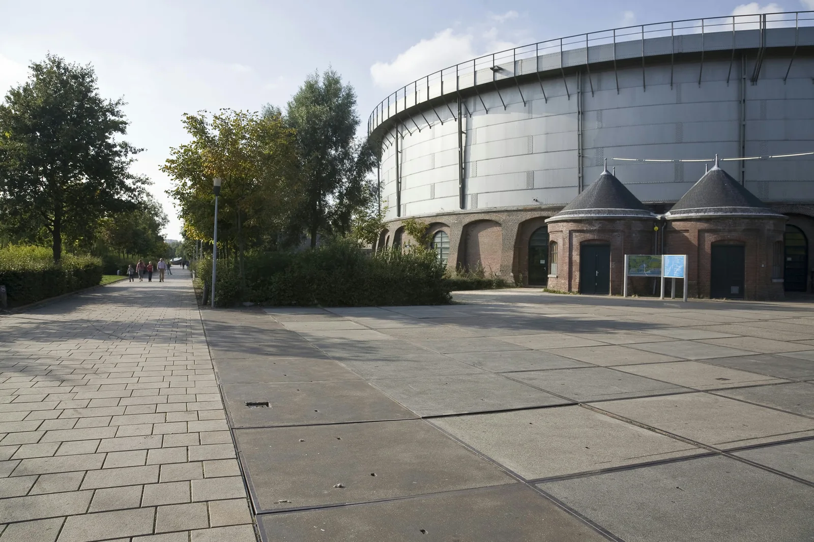

AMSTERDAMOct 17, 2026
Thirty Years on the Calendar
ADE’s 30th runs 21–25 October: more than 3,600 artists, 1,300 events and 300 rooms, plus a panel asking why anyone needs a dancefloor.
Amsterdam booked more than 300 rooms for a week that also asks why anyone needs a dancefloor.
The organisers closed the programme on Tuesday 6 October and called the edition 30 YEARS ADE. Amsterdam Dance Event runs Wednesday 21 October through Sunday 25 October. More than 3,600 artists, more than 1,300 events, more than 300 venues. The festival, the ADE Pro conference and the Arts & Culture programme sit inside the same five days. One room is one ticket. The Pro Pass is the wristband that tries to open all of it, covering the conference, the networking, the business hubs, the festival and the arts programme.
The names worth keeping are the ones that show how wide the booking went. Martin Garrix and Armand Van Helden beside SHERELLE. Carl Craig, Speedy J, Pete Tong. Charlotte Adigéry, Sofia Kourtesis, Logic1000. Chris Stassy back to back with Job Jobse, a shared set rather than two separate ones. And the Royal Concertgebouw Orchestra, which is how a dance week ends up hiring a symphony. Jean-Michel Jarre is guest of honour for the 50th year of Oxygène, at AFAS Live, with a keynote at ADE Pro and further appearances through the week. Armin van Buuren joins him, with Lady Starlight and JakoJako, for Music & Machines: A Conversation Between Artists from Different Generations. Octo Octa with DVS1, HoneyLuv, Sofiya Nzau and DJ Scratch are among the conference additions.
One session is titled Why Humans Still Need Dancefloors? Eris Drew, Alice O’Grady and Sven Bijma of Club RAUM are the three names on it. Down the hall, Insider Knowledge puts Spotify, SoundCloud and YouTube Music in a room with NVIDIA, the majors, Armada and Sziget. ADE and VibeLab are presenting a Nighttime Culture Index, a map of nightlife’s cultural vitality across cities. Dave Clarke moderates a history session called 30 Years of ADE. The figure it is there to remember is 300 professional delegates and three nighttime venues in 1996, when the conference sat around De Balie and Felix Meritis. Thirty editions later the rooms are in the hundreds, and a pass tries to open most of them.
The Icon Series pulls thirty events out to stand for the year. Boris Acket’s installation EINDER is one, with the Royal Concertgebouw Orchestra and Elias Mazian. Swan Lake Remixed for ADE, Dutch National Ballet with ISH Dance Collective, is another, at the Gashouder. Bert van As shot that gas holder on 27 September 2009: a silver drum, brick arches, two pointed porches, a yard with nobody waiting. The ballet is booked inside it this October. The rest of the arts programme walks the week into museums and a dome, DISCO I’m coming out at Wereldmuseum Amsterdam among them, and on Saturday the Culture Hub is back at Felix Meritis with MC Culture.
What closed on 6 October is the list. The week has not happened yet. Between Wednesday and Sunday the city is being asked to hold 1,300 events, while one conference room asks why a dancefloor is worth the trouble. The headcount is the boring part, and that panel is the only adult sentence in a week that would rather impress you with a census.
A promoter in Cumberland is doing well if one room works on a Saturday, and the 1996 numbers are the ones that describe the job: three nighttime venues, and three hundred people who showed up to talk about them. Three hundred rooms is a census. Three rooms is a scene. A week that can hold SHERELLE and a ballet company is a mix a small promoter already understands, without 1,300 events to justify it. The part worth copying is the panel, not the wristband.
Sources
- Amsterdam Dance Event, “Amsterdam Dance Event completes program for landmark 30 YEARS ADE with 3,600+ artists” (6 October 2026): https://www.amsterdam-dance-event.nl/en/news/amsterdam-dance-event-completes-program-for-landmark-30-years-ade-with-3-600-artists/2930003/
- ADE tickets and the Pro Pass: https://www.amsterdam-dance-event.nl/en/tickets/
- 30 YEARS ADE: https://www.amsterdam-dance-event.nl/en/30-years-ade/